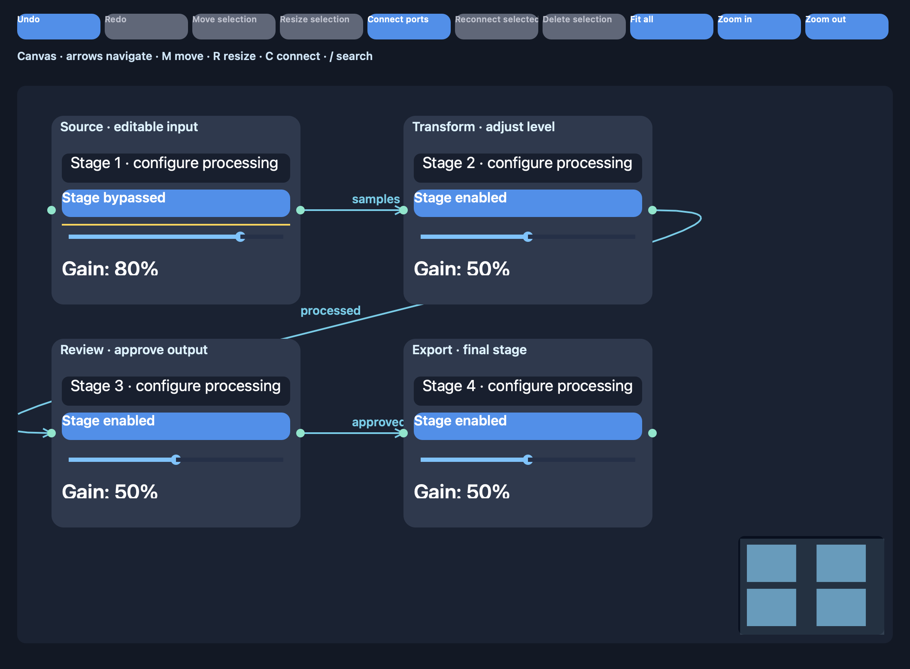
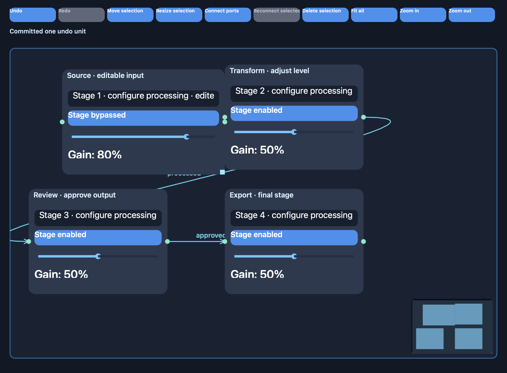
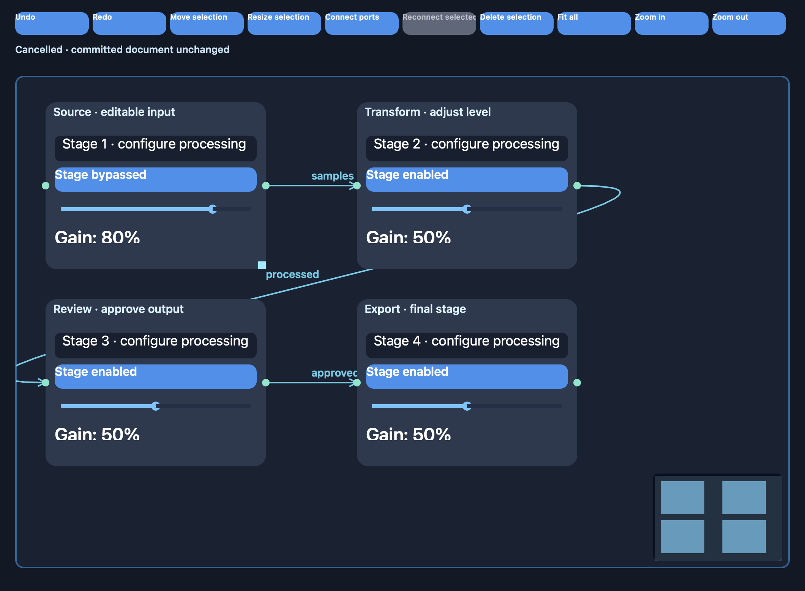
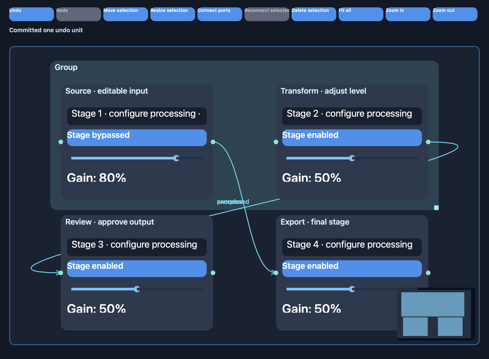

Ordinary components in a real Moxi window Action: Launch the native demo. Expected: Editable text, button, slider, fractional ports, edges and minimap appear.
initial · offscreen-render · 2120 × 1560 pixels

Button and slider own their input Action: Click Apply/Stage enabled, then drag the ordinary slider to 80%. Expected: Controls change state without moving the node; rich probe content growth republishes ports.
Live AppKit editor in the transformed node Action: Enter the first node controls and insert text. Expected: An actual NSTextField owns editing; this is not a drawn input mock.
Zoomed editor in a scrolled parent Action: Zoom to 80% and scroll the parent by 90 points. Expected: The same native editor survives; frame, clip and font agree with published geometry and clipped semantics.
Keyboard move preview Action: Leave controls, press M, then Shift+Right seven times and Shift+Down once. Expected: The preview moves the selected node and its connection without committing.
Escape discards the move preview Action: Press Escape. Expected: The committed position returns without adding a history entry.
recovery · offscreen-render · 2120 × 1560 pixels

Committed move and resized ports Action: Repeat and commit the move; press R, Shift+Right five times, Enter. Expected: The node is wider and the output port/edge follow its published extent.
result · offscreen-render · 2120 × 1560 pixels

Undo restores size and position Action: Undo resize, then undo move. Expected: Placement and connection anchors return; earlier control edits remain.
recovery · offscreen-render · 2120 × 1560 pixels
Invalid connection stays a preview Action: Attempt a duplicate source-to-target connection. Expected: A rejection reason is visible and the existing graph remains intact.
Reconnect retains the old edge until success Action: Choose the existing edge and reconnect to an available input. Expected: The rich probe uses the second node’s alternate input; the graph frees the fourth input then reconnects edge 1.
result · offscreen-render · 2120 × 1560 pixels

Group move, fit and minimap Action: Group nodes 1 and 2, move the group down once, commit, fit all. Expected: Children move once with their group; ports, edges and minimap use the same world bounds.
result · offscreen-render · 2120 × 1560 pixels
Contact sheetReproduce
pixi run canvas-native-check && pixi run canvas-gallery; see docs/canvas-interaction.md
Real transformed ordinary controls, transactional manipulation, connections and groups.
Screenshots show recorded states. They do not establish latency, scientific accuracy, physical IME, screen-reader behavior, or human usability.